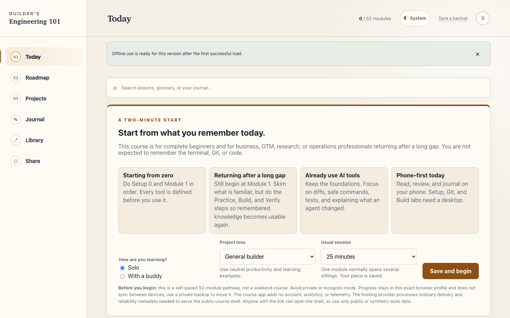
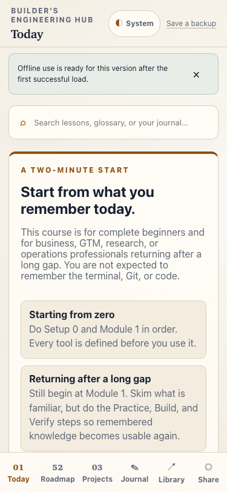
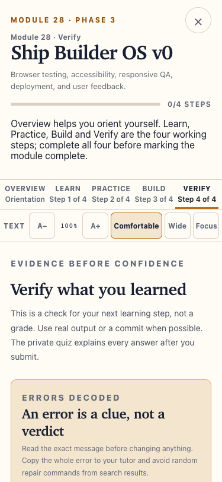

Learn with definitions
Concepts, tools and jargon are introduced before the learner must use them.
Public project showcase · Friend pilot
Builder's Engineering Hub is a 52-module learning product for business, GTM, research and operations professionals who want to build independently—and supervise AI agents with evidence rather than blind trust.
The live course is currently shared directly with a small group of invited learners. This page demonstrates the product without publishing its private source or curriculum.

The product
Most technical courses tell learners what to type. This one first explains what the tool is, what it is not, why it exists and how to recover when the result differs from expectation.
Concepts, tools and jargon are introduced before the learner must use them.
Browser rehearsals lower the first-use barrier without replacing real desktop work.
Git diffs, small commits and reversible steps make agent-assisted work inspectable.
Completion is tied to output, explanations and reviewed changes—not passive clicks.
Evidence before confidence
The product models the engineering habits it asks learners to develop. These results come from the private production release suite and are bounded by repeatable tests and explicit manual-test limits.
State migrations, backup safety, routing, sandboxes, accessibility tokens and offline assets.
Fresh onboarding, module flow, keyboard focus, two-tab editing, restore and service-worker updates.
Every module across all five tabs checked at a 375px viewport for clipping and overflow.
The production dependency audit was clean at the current verified release.
Release evidence last verified 2 August 2026.
Designed for the real learning day
The phone is a companion for orientation, reading, review and journalling. The terminal, editor, Git and project work remain honest desktop activities.


Production architecture
The hosted application and the learner's personal records have deliberately different homes. Cloudflare serves the static course; the browser holds progress.
Ordinary delivery and reliability metadata needed to serve static files.
Progress, journals, evidence, project URLs, preferences and backups.
A course account, shared learner database, product analytics or tracking SDK.
Built and shipped by Nikhil Jois
I directed and shipped the implementation with AI coding agents, while owning the product direction, learner research, curriculum architecture, acceptance criteria, privacy and accessibility decisions, QA standards and release decisions.
Shipping the Hub taught me to translate learner anxiety into concrete product requirements, preserve user state across mature-app changes, inspect agent work through diffs and tests, and treat deployment security as part of the product.
View Nikhil's GitHub profile →